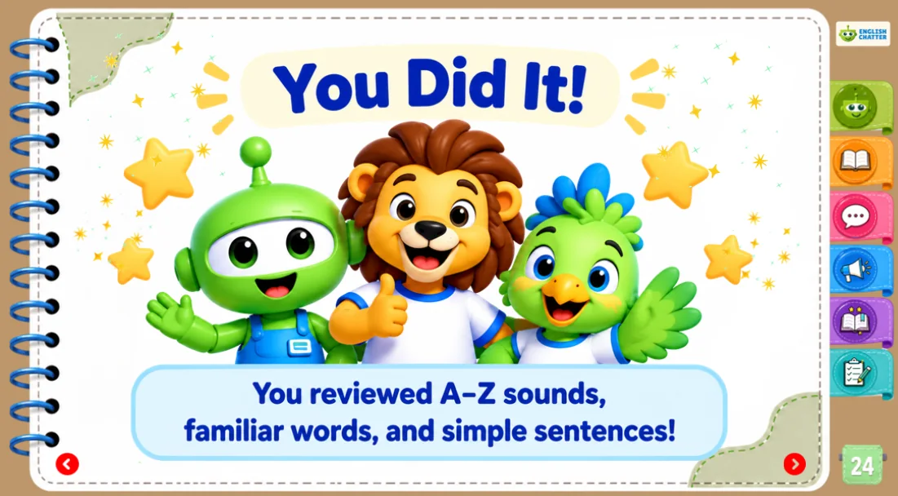

영어를 아는 아이와
영어를 말하는 아이는
다릅니다.
영어를 더 많이 외우는 것보다, 아이가 직접 말해보는 경험이 필요합니다. EnglishChatter는 아이의 현재 말하기를 먼저 살펴보고 1:1 튜터 수업을 통해 편안하게 영어를 꺼내는 경험을 만들어갑니다.
영어는 배우고 있는데,
왜 말하려고 하면 어려울까요?
단어와 문장은 배웠지만 질문을 받으면 대답하기까지 망설여요.
알고 있는 영어도 한두 단어나 짧은 대답으로 끝나는 경우가 많아요.
답을 알아도 스스로 먼저 영어로 말하는 것을 어려워해요.
틀려도 괜찮아요.
먼저 말해보는 수업입니다.
처음부터 긴 문장을 말하지 않아도 괜찮습니다. 담당 튜터는 아이의 대답을 기다리고 작은 시도에도 긍정적으로 반응하며, 아이가 자신의 영어를 조금씩 더 꺼낼 수 있도록 돕습니다.
우리 아이도 경험해보기 →수업 전부터
아이를 먼저 이해합니다.
첫 수업 전에는 학부모님의 사전 정보, AI Speaking Diagnostic, 실제 1:1 수업을 함께 살펴봅니다.
AI 결과만으로 아이의 레벨을 결정하지 않습니다.
지금까지의 영어 학습 경험과 현재 고민을 먼저 확인합니다.
아이가 현재 어떤 영어를 이해하고 어떻게 말하는지 살펴봅니다.
담당 튜터가 실제 대화와 반응을 통해 아이의 수준을 다시 확인합니다.
진단과 실제 수업을 함께 참고해 보다 적합한 수업 방향으로 연결합니다.
AI 진단은 매번
시험을 보기 위한 것이 아닙니다.
첫 진단 이후에는 다음 수업에서 만날 단어와 표현을 미리 경험합니다. 아이에게는 다음 수업을 미리 만나보는 시간이 되고, 튜터에게는 아이의 발화를 미리 이해하는 시간이 됩니다.
처음 보는 영어를 수업에서 갑자기 만나는 대신, 듣고 직접 말해보며 다음 수업에 대한 힌트를 얻습니다.
편하게 말하는 부분, 망설이는 표현, 조금 더 연습하면 좋은 단어와 문장을 수업 전에 확인합니다.
같은 교재를 사용하더라도 아이마다 수업의 포인트는 달라질 수 있습니다.
점수만 보여주는 진단이 아닙니다.
아이의 응답을 문항별로 확인하고 실제 녹음을 다시 들어볼 수 있습니다. 아이가 말한 내용을 바탕으로 잘한 부분과 조금 더 연습해보면 좋은 부분을 피드백으로 제공합니다.

AI가 먼저가 아니라,
아이가 먼저입니다.
AI는 아이가 말한 음성을 분석해 수업 준비에 필요한 정보를 제공합니다. 하지만 숫자나 AI 결과만으로 아이를 판단하지 않습니다. 담당 튜터가 실제 수업에서 아이와 대화하고 반응을 직접 확인합니다.
25분의 수업이
25분으로 끝나지 않도록.
수업에서 확인한 내용을 부모 피드백과 말하기 복습으로 다시 연결합니다.

담당 튜터가 남긴 내용을 한국 교육팀이 정리해 수업 모습과 연습 포인트를 한국어로 전달합니다.

수업에서 배운 표현과 연습하면 좋은 Target Words & Sentences를 다시 소리 내어 말해봅니다.
화면의 결과 표시는 활동 내 연습 결과 예시입니다.

7회의 수업 후 Review Lesson을 통해 지금까지 만난 단어와 표현을 다시 꺼내 말해봅니다.
배우고 끝내지 않고
다시 말해봅니다.
외웠는지를 시험하는 시간이 아니라, 배웠던 영어를 아이가 다시 꺼내보는 시간입니다.

아이는 영어로,
부모님은 한국어로 편하게.
수업 일정부터 튜터 피드백, 진단 결과, 프로그램에 대한 궁금한 점까지 EnglishChatter 한국팀과 한국어로 소통할 수 있습니다.
AI Speaking Diagnostic → 1:1 Live Lesson → Tutor Feedback → Speaking Practice → 7+1 Review
각 단계가 따로 끝나는 것이 아니라 다음 수업으로 이어지도록 설계합니다.
자주 묻는 질문
영어를 많이 못해도 가능한가요?
네. 첫 진단과 실제 수업을 함께 살펴 아이에게 보다 적합한 레벨과 수업 방향을 확인합니다.
첫 AI 진단은 시험인가요?
첫 진단은 현재 말하기 수준을 이해하기 위한 자료입니다. AI 결과만으로 아이의 수준을 결정하지 않고 담당 튜터의 실제 수업 관찰을 함께 확인합니다.
수업 후 피드백은 어떻게 받나요?
담당 튜터의 수업 피드백을 한국 교육팀이 정리해 학부모님께 한국어로 전달합니다.
수업 후에도 연습할 수 있나요?
수업에서 배운 표현과 조금 더 연습하면 좋은 단어·문장을 활용한 Speaking Practice를 제공합니다.